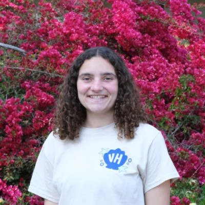

I am a 3rd-year computer science major at UC Irvine, specializing in infomration.
I am interested in data, web development, and robotics. Most recently, I was a website and research assistant at the City of La Mesa. I worked directly with the City Manager and tech team, to help update the website to meet the new ADA digital accessibility guidelines.
I currently work at the Barclay Theatre as an ssher. I help guide guests, answer questions, and solve problems. I also work on crew at the Bren Events Center. I set up and take down all the equiptment for sports games and practices, graduations, and other events.
My hobbies include soccer, tennis, reading and theatre. I played soccer for 15 years, tennis for 6 years, and acted for 10 years.
Technical Skills: Java, Python, C++, SQL, HTML, CSS, JavaScript, MIPS Assembly, Linux, AWS
Personal Skills: Curiosity, Organization, Quick Learner, Problem-solving, Communication, Teamwork, Dedication, Leadership